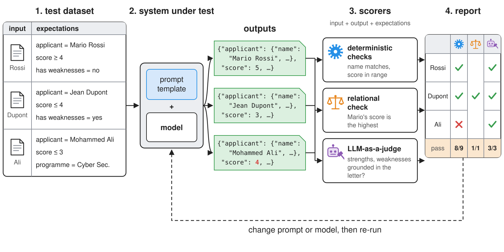

Validating Generative Software
Intelligent Agents — Module 2
A.Y. 2026/2027
Giovanni Ciatto
Compiled on: 2026-10-10 — printable version
Outline
- The general concept: why LLM-based software is hard to test, and what an evaluation is made of
- LLM-as-a-Judge, and the technological landscape of evaluation frameworks
- Examples: testing the letter-scoring system with DeepEval and MLflow
- Exercises on the running example: complete the test suite of the letter-scoring system, testing infrastructure for ID documents extraction
Recall: we assume the reader is familiar with structured outputs and with the running example, from the previous lecture
Validating generative software: the general concept
-
LLM-based software is hard to test:
- outputs are non-deterministic (same input, different outputs)
- outputs are open-ended (many correct answers, no single expected value)
- behaviour changes whenever the prompt, the model, or the provider changes, even silently
-
Hence, rather than unit tests, we need evaluations (a.k.a. evals): measuring how often, and how well, the system behaves as expected, on a dataset of representative inputs
-
Ingredients of an evaluation:
- a test dataset: known inputs, each with the expected results (a.k.a. expectations), designed by humans before testing
- the system under test (prompt + model + code)
- scorers (a.k.a. metrics), mapping each (input, output, expectation) to a score or a pass/fail:
- deterministic scorers: schema validity, exact match, ranges, regular expressions, invariants and relations among outputs
- statistical scorers: similarity to a reference (e.g. BLEU, ROUGE, embedding similarity)
- LLM-as-a-Judge: another LLM grades the output, according to a natural language rubric
- humans: the most reliable, and the most expensive
- an aggregation (e.g. pass rate, mean score), to be compared across versions of the system (regression testing)
-
Structured outputs make evaluation much easier: most fields can be checked with code
Validating generative software: an intuitive example

LLM-as-a-Judge
-
Idea: use a (strong) LLM to grade outputs, according to some criteria (cf. Zheng et al. (2023), and the survey by Gu et al. (2024))
- pointwise (grade one output on a scale), or pairwise (which of two outputs is better?), with or without a reference answer
- the judge’s prompt is a rubric, and its answer is (ideally) a structured output: score + rationale
- asking for the rationale first helps (cf. chain-of-thought); G-Eval goes further, by first generating evaluation steps from the criteria
-
Known biases of judges:
- position bias (preferring the first, or the second, option in pairwise comparisons), cf. Wang et al. (2023)
- verbosity bias (preferring longer answers), and self-preference (preferring outputs of the same model family)
-
Good practices:
- use a different (and possibly stronger) model as judge, with low temperature
- prefer narrow, binary criteria (e.g. “is every strength supported by the letter?”) over vague ones (e.g. “is it good?”)
- validate the judge: compare its grades with human grades, on a small sample, before trusting it
- use judges only for what cannot be checked with code
Evaluation frameworks: the technological landscape
| Tool | Style | Scorers / judges | Results in | Docs |
|---|---|---|---|---|
| DeepEval | unit-test like, on top of pytest |
many built-in metrics (G-Eval, hallucination, RAG, agents), custom ones | terminal; optional cloud dashboard | link |
| MLflow GenAI | experiment tracking: runs, datasets, traces | code scorers (@scorer), built-in and custom judges (make_judge) |
local (or remote) tracking server, with web UI | link |
| promptfoo | declarative (YAML), CLI, language-agnostic | assertions, model-graded rubrics, red-teaming | terminal, local web UI | link |
| OpenAI Evals | registry of evals + platform | templates, model-graded | OpenAI dashboard | link |
| Ragas | library of metrics | focused on RAG and agents | Python objects, dataframes | link |
| Inspect | framework for benchmarks and safety evals | solvers + scorers, model-graded | log viewer | link |
| LangSmith | tracing + evals, by LangChain | code and LLM evaluators | cloud dashboard | link |
- Same metamodel everywhere: dataset $\times$ system under test $\rightarrow$ outputs $\rightarrow$ scorers $\rightarrow$ report
- Differences: how datasets and scorers are declared (code vs. configuration), where results go (terminal, local UI, cloud), and batteries included (built-in metrics)
Example 1: Testing the Letter Scoring System with DeepEval (pt. 1)
Goal: set up a test suite for the LangChain letter-scoring system of Example 1 (bis) of the Prompt Engineering lecture, checking some fields of the
LetterInfoobjects it produces
- First, design the test dataset: known inputs (the letters), each with the results expected from a correct scoring
- written by humans (the committee), as a data file (
test_data.yml) shared among test suites
- written by humans (the committee), as a data file (
# Test dataset, designed by humans (the committee) BEFORE testing: known inputs (the letters), each with the results expected from a correct scoring.
# Some expectations are checked exactly (names, emails), some with tolerance (score ranges), some by an LLM-as-a-judge (descriptions).
- input: letter-mario-rossi.txt
expectations:
applicant_name: Mario Rossi # exact match
author_name: Alessandro Bianchi # exact match
author_email: alessandro.bianchi@example.edu # exact match
min_score: 4 # range
relationship_with_applicant: >- # LLM-as-a-judge
taught the applicant a Master's course (Machine Learning and Data Mining), then supervised their Master's thesis
- input: letter-jean-dupont.txt
expectations:
applicant_name: Jean Dupont
author_name: Claire Moreau
author_email: claire.moreau@example.fr
max_score: 4
relationship_with_applicant: >-
taught the applicant a Master's course (Apprentissage automatique), then interacted with them in a research-oriented module
- input: letter-mohammed-ali.txt
expectations:
applicant_name: Mohammed Ali
author_name: Kareem Al-Haddad
author_email: k.alhaddad@example.edu.jo
max_score: 3
relationship_with_applicant: >-
knew the applicant as one of the students of the Software Engineering programme, without supervising their final project
- adding a test case = adding an entry to the file, no code changes
- notice that each expectation is meant for a specific kind of check:
- exact match: names and emails
- tolerant match: ranges for scores
- LLM-as-a-Judge: descriptions in natural language (e.g. the author’s relationship with the applicant), as there are many correct ways to phrase them
- the file is loaded in Python as a list of
dicts- full code here:
from pathlib import Path
import yaml
import data
TEST_DATA_FILE = Path(__file__).parent / "test_data.yml"
# list of test cases, e.g. [{"input": "letter-mario-rossi.txt", "expectations": {"applicant_name": "Mario Rossi", ...}}, ...]
TEST_CASES = yaml.safe_load(TEST_DATA_FILE.read_text())
yaml.safe_load(from PyYAML) parses YAML text into Pythonlists anddictsread_letter(case), in the same file, reads the text of the case’s letter from the running example’sdata/directory
Example 1: Testing the Letter Scoring System with DeepEval (pt. 2)
-
Imports: DeepEval runs on top of
pytest, and the system under test is imported as is:import functools import os import sys import pytest from deepeval import assert_test from deepeval.metrics import GEval from deepeval.models import OpenRouterModel from deepeval.test_case import LLMTestCase, SingleTurnParams from snippets.lecture_validating.dataset import TEST_CASES, read_letter from snippets.lecture_prompting.example1bis.letter_scoring_langchain import score_letter, api_key, base_url score = functools.cache(score_letter) # this is the scoring function under test! (cached: one LLM call per letter) for_each_case = pytest.mark.parametrize("case", TEST_CASES, ids=lambda c: c["expectations"]["applicant_name"])- snippets are regular Python packages: the system under test is imported from the prompting lecture’s package, with no further configuration
functools.cacheaccepts a Python function (score_letter) and returns a cached version of it (score):- each time
score(l)is called, the cache checks if the same letterlhas already been scored - if yes, the cached output is returned; if not, the function
score_letteris called and the output is cached
- each time
- this approach allows to run multiple tests on the same letter without making multiple LLM calls
pytest.mark.parametrize("case", TEST_CASES, ids=...)is a decorator (for_each_case) making a test run once per test case, passed as thecaseargument;idsnames each run (after the applicant)api_keyandbase_urlare re-used from the system under test, so the judge talks to the same provider; DeepEval’s classes (GEval,OpenRouterModel,SingleTurnParams,LLMTestCase,assert_test) are explained in steps 5–6
Example 1: Testing the Letter Scoring System with DeepEval (pt. 3)
-
Deterministic scorers are just
pytestassertions on some fields of the structured output:# 1. deterministic scorers: plain assertions on some fields of the structured output @for_each_case def test_names_and_email(case): # exact match info, expected = score(read_letter(case)), case["expectations"] assert info.applicant.name == expected["applicant_name"] assert info.author.name == expected["author_name"] assert info.author.email == expected["author_email"] @for_each_case def test_score_in_range(case): # tolerant match info, expected = score(read_letter(case)), case["expectations"] assert expected.get("min_score", 0) <= info.score <= expected.get("max_score", 5)pytestcollects and runs everytest_*function: a failingassert(or exception) is a failing test- names and emails must match exactly; scores may vary within a range
-
Relational properties hold across inputs (a.k.a. metamorphic testing): they are robust to the variability of single scores
# 2. relational property: holds across inputs, even if single scores may vary def test_best_letter_is_mario_rossi(): scores = {c["expectations"]["applicant_name"]: score(read_letter(c)).score for c in TEST_CASES} assert scores["Mario Rossi"] == max(scores.values())
Example 1: Testing the Letter Scoring System with DeepEval (pt. 4)
-
LLM-as-a-Judge, via DeepEval’s G-Eval metric: the judge scores (in $[0, 1]$) how much the output satisfies the criteria, and the test passes if the score is above the threshold
# 3. LLM-as-a-judge: a (different) model grades what is hard to check with code judge = OpenRouterModel(model=os.environ.get("JUDGE_MODEL", "google/gemma-4-31b-it:free"), api_key=api_key, base_url=base_url) relationship = GEval( # reference-based: the judge compares the actual output with the expected one name="Relationship", criteria="The actual output describes the relationship between the author of a recommendation letter and the applicant. " "It must be consistent with the expected output: penalise contradictions, omitted key facts, and invented facts.", evaluation_params=[SingleTurnParams.ACTUAL_OUTPUT, SingleTurnParams.EXPECTED_OUTPUT], model=judge, threshold=0.7, # GEval scores are in [0, 1]: below the threshold, the test fails ) groundedness = GEval( # reference-free: the judge compares the actual output with the input letter name="Groundedness", criteria="Every skill, strength, and weakness listed in the actual output must be explicitly supported by the letter in the input. " "Penalise any invented, exaggerated, or misattributed item.", evaluation_params=[SingleTurnParams.INPUT, SingleTurnParams.ACTUAL_OUTPUT], model=judge, threshold=0.7, )- the judge is a different model than the one under test (set
JUDGE_MODELto change it), wrapped inOpenRouterModel: DeepEval’s adapter for OpenRouter (or any OpenAI-compatible API, viabase_url) evaluation_paramsselects, among the fields of a test case (SingleTurnParams.INPUT,.ACTUAL_OUTPUT,.EXPECTED_OUTPUT, …), which parts of the test case the judge can see:- reference-based judge (
relationship): compares the actual output with the expected one, written by humans - reference-free judge (
groundedness): compares the actual output with the input, no expectation needed
- reference-based judge (
- the judge is a different model than the one under test (set
Example 1: Testing the Letter Scoring System with DeepEval (pt. 5)
-
Judges are used within tests, via
assert_test, on test cases (LLMTestCase) built from some fields of the structured output:@for_each_case def test_relationship(case): letter = read_letter(case) actual, expected = score(letter).author.relationship_with_applicant, case["expectations"]["relationship_with_applicant"] assert_test(LLMTestCase(input=letter, actual_output=str(actual), expected_output=expected), [relationship]) @for_each_case def test_skills_strengths_weaknesses(case): letter = read_letter(case) actual = score(letter).applicant.model_dump_json(include={"skills", "strengths", "weaknesses"}) assert_test(LLMTestCase(input=letter, actual_output=actual), [groundedness])LLMTestCase(input=..., actual_output=..., expected_output=...): what the judge may see (strings);assert_test(case, metrics)runs each metric, and fails the test if some score is below its thresholdmodel_dump_json(include={...})serialises only the listed fields of the Pydantic objectrelationship_with_applicantis compared with the expected descriptionskills,strengths, andweaknessesare checked against the letter (are they grounded in it?)
Example 1: Testing the Letter Scoring System with DeepEval (pt. 6)
-
Files of this example, in the
lab-snippetsrepository (cf. how to set it up, and run snippets):lab-snippets/ ├── data/ │ ├── letter-jean-dupont.txt # inputs (running example) │ ├── letter-mario-rossi.txt │ ├── letter-mohammed-ali.txt │ └── __init__.py # helpers to locate data files ├── snippets/ │ ├── lecture_prompting/ │ │ └── example1bis/ │ │ └── letter_scoring_langchain.py # system under test │ └── lecture_validating/ │ ├── example1/ │ │ └── test_letter_scoring.py # the test suite │ ├── dataset.py # loads the test dataset │ └── test_data.yml # test dataset └── pyproject.toml # dependencies of all snippets- set the environment variables
OPENAI_API_KEY(and, optionally,OPENAI_BASE_URL,OPENAI_MODEL,JUDGE_MODEL), cf. Free Access to LLMs
- set the environment variables
-
Let’s run it (full code here), from the project’s root directory:
poetry run python -m snippets -l validating -e 1 -v # runs pytest on the test suite, with any option given (-v: one line per test)- would the outputs of Example 1 of the Prompt Engineering lecture pass? No: Mohammed Ali’s shallow letter got score 4, whereas the committee expects at most 3
- a test failure is information: fix the prompt (e.g. with Exercise 1 of the Prompt Engineering lecture), or the model, and re-run
- run the suite several times: which tests are flaky? Flakiness is a measure of the system’s (in)consistency
- would the outputs of Example 1 of the Prompt Engineering lecture pass? No: Mohammed Ali’s shallow letter got score 4, whereas the committee expects at most 3
Example 1 (bis): Evaluating the Letter Scoring System with MLflow (pt. 1)
-
Same test dataset, rearranged as MLflow wants it:
inputs(for the system) +expectations(for the scorers)import os import sys from datetime import datetime from typing import Literal import mlflow from mlflow.genai import scorer from mlflow.genai.judges import make_judge from snippets.lecture_validating.dataset import TEST_CASES, read_letter from snippets.lecture_prompting.example1bis.letter_scoring_langchain import score_letter, base_url # 1. the dataset: "inputs" are passed to predict_fn, "expectations" to the scorers data = [dict(inputs=dict(letter_text=read_letter(c)), expectations=c["expectations"]) for c in TEST_CASES] # 2. the system under test (outputs must be serialisable) def predict_fn(letter_text: str) -> dict: return score_letter(letter_text).model_dump()- the system under test is a function (
predict_fn), called with theinputsas keyword argumentsmodel_dump()turns theLetterInfoobject into a plaindict(outputs must be serialisable, to be logged)
- the system under test is a function (
-
Deterministic scorers are functions decorated with
@scorer, whose parameters are named after what they need (inputs,outputs,expectations,trace):# 3. deterministic scorers, on some fields of the structured output @scorer def names_and_email(outputs, expectations) -> bool: # exact match return (outputs["applicant"]["name"] == expectations["applicant_name"] and outputs["author"]["name"] == expectations["author_name"] and outputs["author"]["email"] == expectations["author_email"]) @scorer def score_in_range(outputs, expectations) -> bool: # tolerant match return expectations.get("min_score", 0) <= outputs["score"] <= expectations.get("max_score", 5)
Example 1 (bis): Evaluating the Letter Scoring System with MLflow (pt. 2)
-
Judges are created via
make_judge, with template variables in the instructions, and a structured feedback type:# 4. LLM-as-a-judge (the API key is read from OPENAI_API_KEY) judge_options = dict(model=f"openai:/{os.environ.get('JUDGE_MODEL', 'google/gemma-4-31b-it:free')}", base_url=base_url, feedback_value_type=Literal["yes", "no"], generate_rationale_first=True) relationship = make_judge( # reference-based: the judge compares outputs with expectations name="relationship", instructions="The {{ outputs }} contain the information extracted from a recommendation letter, and the {{ expectations }} what a human expects. " "Answer 'yes' if the author's relationship_with_applicant in the outputs is consistent with the relationship_with_applicant " "in the expectations (no contradictions, no omitted key facts, no invented facts), 'no' otherwise.", **judge_options, ) groundedness = make_judge( # reference-free: the judge compares outputs with inputs name="groundedness", instructions="The {{ inputs }} contain a recommendation letter, and the {{ outputs }} the information extracted from it. " "Answer 'yes' if every skill, strength, and weakness of the applicant in the outputs is explicitly supported by the letter, 'no' otherwise.", **judge_options, ){{ expectations }}makes the judge reference-based (relationship),{{ inputs }}makes it reference-free (groundedness)generate_rationale_first=True: rationale before verdict (cf. chain-of-thought)modelis a URI (<provider>:/<model>);base_urlredirects it to any OpenAI-compatible API (the key is read fromOPENAI_API_KEY)feedback_value_type: the type of the verdict, here aLiteral(cf. structured outputs) admitting only"yes"or"no"
Example 1 (bis): Evaluating the Letter Scoring System with MLflow (pt. 3)
-
Evaluation is a single call, whose results are logged as an MLflow run (named after the current date and time, in ISO format):
if __name__ == "__main__": mlflow.set_experiment("letter-scoring") # runs are grouped into experiments with mlflow.start_run(run_name=datetime.now().isoformat(timespec="seconds")): # e.g. "2026-10-01T17:36:26" results = mlflow.genai.evaluate(data=data, predict_fn=predict_fn, scorers=[names_and_email, score_in_range, relationship, groundedness]) print(results.metrics) # fraction of test cases passing each scorer, e.g. {'score_in_range/mean': 0.67, ...} failed = [name for name, value in results.metrics.items() if value != 1] # also catches NaN (scorer errors) if failed: sys.exit(f"Failed scorers: {failed}") # non-zero exit code, as a failing test suite (e.g. to make CI fail)mlflow.set_experiment(name): selects (or creates) the experiment, i.e. the group of runs to be comparedmlflow.start_run(run_name=...): a context manager opening a run, i.e. one execution whose parameters, traces, and results are loggedmlflow.genai.evaluate(...): callspredict_fnon each entry’sinputs, then applies every scorer, and logs everything in the runresults.metricsreports, for each scorer, the fraction of test cases passing it (judges’"yes"count as 1)- if some scorer does not pass on every test case, the script fails (non-zero exit code), just like a failing test suite
Example 1 (bis): Evaluating the Letter Scoring System with MLflow (pt. 4)
-
Files of this example, in the
lab-snippetsrepository (cf. how to set it up, and run snippets):lab-snippets/ ├── data/ │ ├── letter-jean-dupont.txt # inputs (running example) │ ├── letter-mario-rossi.txt │ ├── letter-mohammed-ali.txt │ └── __init__.py # helpers to locate data files ├── snippets/ │ ├── lecture_prompting/ │ │ └── example1bis/ │ │ └── letter_scoring_langchain.py # system under test │ └── lecture_validating/ │ ├── example1bis/ │ │ └── evaluate_mlflow.py # the evaluation │ ├── dataset.py # loads the test dataset │ └── test_data.yml # test dataset └── pyproject.toml # dependencies of all snippets- set the environment variables
OPENAI_API_KEY(and, optionally,OPENAI_BASE_URL,OPENAI_MODEL,JUDGE_MODEL), cf. Free Access to LLMs
- set the environment variables
-
Let’s run it (full code here), from the project’s root directory:
poetry run python -m snippets -l validating -e 1bis # prints metrics, e.g. {'score_in_range/mean': 0.67, ...}, then: Failed scorers: [...] poetry run mlflow ui # then open http://localhost:5000, to browse runs, traces, and judges' rationales
DeepEval vs. MLflow: analogies and differences
| Aspect | DeepEval | MLflow GenAI |
|---|---|---|
| Mental model | tests: pass / fail, in CI | experiments: runs to be compared over time |
| Dataset | test cases (LLMTestCase), or pytest parameters |
list of dicts (inputs, expectations), dataframes, or managed datasets |
| System under test | called by you, inside the test | predict_fn, called by the framework (and traced) |
| Deterministic scorers | plain asserts |
@scorer functions, returning bool, numbers, or Feedback |
| LLM judges | GEval(criteria=..., threshold=...), plus many ready-made metrics |
make_judge(instructions=..., feedback_value_type=...), plus built-in judges |
| Judge model | DeepEvalBaseLLM subclasses (OpenAI, OpenRouter, Ollama, …) |
model URIs (openai:/..., anthropic:/...), plus base_url |
| Results | terminal (+ optional cloud platform) | tracking server + web UI (local, self-hosted, or managed) |
| Best for | regression tests in CI pipelines | comparing prompts / models, and monitoring in production |
- Same concepts (test dataset, deterministic scorers, judges, aggregation), different workflows: the two can coexist in a project
Exercise 1: Complete the Test Suite of the Letter Scoring System (pt. 1)
Goal: the examples above only check some fields of
LetterInfo; extend one of the two test suites (DeepEval or MLflow, your choice) so that every field is checked
Code: put your solution in
snippets/lecture_validating/exercise1/oflab-snippets, and run it viapoetry run python -m snippets -l validating -x 1
TO-DO List
- start from the project of Example 1 (or 1 bis), and list the fields which are not checked yet (cf. the
pydanticclasses inletter_scoring_langchain.py):ApplicantInfo:degree,alma_mater,attendedAuthorInfo:affiliation,position,seniority,nationalityLetterInfo:application_for
- for each field, decide how to check it, and why: exact match, tolerant match (normalisation, “contains”, ranges, set inclusion, …), or LLM-as-a-Judge (reference-based or reference-free)
- read the letters yourself, and extend
test_data.ymlwith the expectations for each field of each letter - write the corresponding scorers (tests, or
@scorerfunctions, or judges), and run the suite - for each failure, decide whether the system or the expectation is wrong, and fix the right one
Exercise 1: Complete the Test Suite of the Letter Scoring System (pt. 2)
Decision points and hints
- Optional fields (e.g.
nationality,alma_mater): what is the expected value when the letter does not mention it? How do you write it in YAML? - Normalisation: “Université de Lyon” vs. “University of Lyon”, “Associate Professor” vs. “Assoc. Prof.”: are they the same for the committee?
- Scales:
seniorityis an integer, defined by the field’s description: is the description unambiguous for every letter? - Lists (e.g.
attended): should every expected item be there? Should every extracted item be expected? Is the order relevant? - Cost: one judge per field and per letter means many requests; could a single judge check several fields at once? What would you lose?
How to test it?
- deliberately break an expectation in
test_data.yml(e.g. a wrong affiliation), and check that the suite catches it
Solution: a walkthrough follows in the next (vertical) column — try on your own first!
Exercise 1: Complete the Test Suite of the Letter Scoring System — Solution
⚠️ Spoiler alert: the walkthrough of a possible solution starts below
- do not proceed until you have attempted the exercise on your own
- press → to skip the walkthrough, ↓ to see it
- the solution is on the
masterbranch oflab-snippets(whereas you cloned theexercisesbranch) - here the tests are the solution: the interesting part is the decisions behind each expectation and each check
Exercise 1 — Solution: matching conventions (steps 2–3)
# Expectations for the fields of LetterInfo NOT checked by Example 1 (whose test_data.yml covers the others), written by reading the letters.
# Conventions (decided once, for all fields, and documented here, where the committee edits them):
# - strings are matched TOLERANTLY: case-, accent-, and punctuation-insensitive, the expected text must be CONTAINED in the actual one
# - a list of strings means: any of them is fine (e.g. a title, in the original language or translated)
# - `null` means: the letter does not say it, so the field must be empty (YAML's null = Python's None)
# - `attended` lists courses which must ALL be among the extracted ones (others may be there too, in any order)
- input: letter-mario-rossi.txt
expectations:
degree: master
alma_mater: null # the letter never says where Mario studied (Bologna is the author's affiliation!)
attended: [machine learning and data mining]
affiliation: university of bologna
position: associate professor
seniority: [3] # admissible values (a list, in case of ambiguity)
nationality: null # never stated
application_for: data science
- conventions decided once, for all fields, and written in the dataset, where the committee edits it
- a list means “any of these is fine”: translations, synonyms, or several admissible values of an ambiguous scale
nullmeans “not stated in the letter”: the model must not guess- e.g. Mario’s
alma_mater: Bologna is the author’s affiliation, not the applicant’s university
- e.g. Mario’s
Exercise 1 — Solution: the ambiguous cases
- input: letter-jean-dupont.txt
expectations:
degree: [master, informatique]
alma_mater: [universite de lyon, university of lyon]
attended: [apprentissage automatique, vision par ordinateur]
affiliation: [universite de lyon, university of lyon]
position: [maitresse de conferences, associate professor, lecturer] # a French title, maybe translated
seniority: [1, 2, 3] # ambiguous: "maîtresse de conférences" is a tenured lecturer, i.e. 1, 2, or 3 depending on the mapping
nationality: null
application_for: artificial intelligence
- input: letter-mohammed-ali.txt
expectations:
degree: software engineering
alma_mater: [university of amman, null] # implied ("our academic programme", the author works there), not stated: both are fine
attended: [databases, computer networks]
affiliation: university of amman
position: associate professor
seniority: [3]
nationality: [null, jordan] # "Amman, Jordan" is the author's address, not their nationality: a model may conflate them
application_for: cyber security
- reading the letters yourself reveals ambiguity the prompt never resolved:
- “maîtresse de conférences” →
seniority1, 2, or 3? - Mohammed’s
alma_materis implied, not stated: bothnulland Amman are fine - “Amman, Jordan” is the author’s address, not their nationality
- “maîtresse de conférences” →
- each ambiguity is either accepted in the expectations (lists) or fixed in the field description of the prompt
Exercise 1 — Solution: re-use and tolerant matching (steps 2–3)
from snippets.lecture_validating.dataset import read_letter
# the tests of Example 1 (names, email, score, relationship, skills/strengths/weaknesses): imported, hence collected and run here too.
# `score` is the same cached scoring function, so each letter is still scored only ONCE, across old and new tests
from snippets.lecture_validating.example1.test_letter_scoring import (
score, test_names_and_email, test_score_in_range, test_best_letter_is_mario_rossi, test_relationship, test_skills_strengths_weaknesses,
)
# step 3: the new expectations (same inputs as Example 1's test data)
TEST_CASES = yaml.safe_load((Path(__file__).parent / "test_data.yml").read_text())
for_each_case = pytest.mark.parametrize("case", TEST_CASES, ids=lambda c: c["input"])
# step 2: tolerant matching, i.e. normalisation + containment (cf. the conventions in test_data.yml)
def normalise(text: str | None) -> str:
"""e.g. 'Maîtresse de Conférences.' -> 'maitresse de conferences'"""
text = unicodedata.normalize("NFKD", text or "").encode("ascii", "ignore").decode() # strips accents
return " ".join(text.lower().translate(str.maketrans(string.punctuation, " " * len(string.punctuation))).split())
def matches(actual: str | None, expected: str | list | None) -> bool:
"""Whether the actual value matches the expected one (or any of them, if a list), as per the conventions in test_data.yml."""
if isinstance(expected, list):
return any(matches(actual, e) for e in expected)
if expected is None: # the letter does not say it: nothing (or an explicit "unknown", which some models write) is expected
return not actual or normalise(actual) in {"none", "null", "unknown", "not specified", "not mentioned", "n a"}
return actual is not None and normalise(expected) in normalise(actual)
- Example 1’s tests are imported, hence collected and run here too, and share the same cached
score: one LLM call per letter, for all tests normalisehandles case, accents, punctuation:unicodedata.normalize("NFKD", ...)splits “é” into “e” + accent, then.encode("ascii", "ignore")drops the accentstr.maketrans+translateturn everystring.punctuationchar into a blank
matchesadds containment (“University of Bologna” ⊇ “bologna”) and the list /nullconventions- some models write
"unknown"instead ofNone: accepted as empty (a choice: you may want to forbid it)
Exercise 1 — Solution: one test per group of fields (step 4)
# step 4: one test per group of fields, with the most appropriate kind of check
@for_each_case
@pytest.mark.parametrize("field", ["degree", "alma_mater"])
def test_applicant_studies(case, field): # tolerant match
actual = getattr(score(read_letter(case)).applicant, field)
assert matches(actual, case["expectations"][field]), f"{field}: {actual!r}"
@for_each_case
def test_attended_courses(case): # set inclusion: every expected course is among the extracted ones (order, and extra ones, do not matter)
actual = score(read_letter(case)).applicant.attended
missing = [course for course in case["expectations"]["attended"] if not any(matches(a, course) for a in actual)]
assert not missing, f"missing courses: {missing}, extracted: {actual}"
@for_each_case
@pytest.mark.parametrize("field", ["affiliation", "position", "nationality"])
def test_author_info(case, field): # tolerant match
actual = getattr(score(read_letter(case)).author, field)
assert matches(actual, case["expectations"][field]), f"{field}: {actual!r}"
@for_each_case
def test_author_seniority(case): # exact match, among admissible values (as the scale is ambiguous for some positions)
actual = score(read_letter(case)).author.seniority
assert actual in case["expectations"]["seniority"]
@for_each_case
def test_application_for(case): # tolerant match
actual = score(read_letter(case)).application_for
assert matches(actual, case["expectations"]["application_for"]), f"application_for: {actual!r}"
- tolerant match for free-text fields; set inclusion for
attended(order and extra courses don’t matter); exact match among admissible values forseniority - parametrised over fields too (stacked
parametrizedecorators = every letter $\times$ every field): a failure names the letter and the field - no LLM-as-a-Judge needed: all these fields are short facts, which code checks cheaply and deterministically
- judges stay where they were (relationship, groundedness), cf. the cost hint
Exercise 1 — Solution: Project Structure
Files of this solution, in the lab-snippets repository (branch master):
lab-snippets/
├── data/
│ ├── letter-jean-dupont.txt # inputs (running example)
│ ├── letter-mario-rossi.txt
│ └── letter-mohammed-ali.txt
└── snippets/
├── lecture_prompting/
│ └── example1bis/
│ └── letter_scoring_langchain.py # system under test
└── lecture_validating/
├── example1/
│ └── test_letter_scoring.py # Example 1's tests (re-used)
├── exercise1/
│ ├── test_all_fields.py # the complete test suite
│ └── test_data.yml # expectations for the other fields
├── dataset.py # loads Example 1's test dataset
└── test_data.yml # Example 1's test datasetpoetry run python -m snippets -l validating -x 1 -v # runs pytest on the complete suite, with any option given
- then break an expectation (e.g. a wrong
affiliation) and check that the suite catches it
Exercise 2: Testing Infrastructure for ID Document Extraction (pt. 1)
Goal: the committee wants evidence that the extractor of Exercise 2 of the Prompt Engineering lecture is reliable, and wants to be warned whenever a change in prompt or model makes it worse
Code: put your solution in
snippets/lecture_validating/exercise2/oflab-snippets, and run it viapoetry run python -m snippets -l validating -x 2
TO-DO List
- first, design a test dataset from the 3 passports of the running example: for each picture, write down the expected values of all fields (name, date of birth, ID number, expiration date)
- pick a framework (DeepEval or MLflow), and write deterministic scorers:
- exact match for ID numbers and dates, normalised match for names (case, accents, order of first/family name)
- invariants: date of birth < expiration date, candidate is of age, etc.
- measure consistency: run the extractor $N$ times per picture, and report the agreement rate per field
- compare single queries vs. majority voting (as in Exercise 2 of the Prompt Engineering lecture): does voting improve accuracy?
- add an LLM-as-a-Judge only where code can’t help (e.g. “is the document legible enough to trust the extraction?”), and validate it against your own judgement
- run the suite with at least two models, and write down which one you’d pick, and why (cf. the Governance lecture)
Exercise 2: Testing Infrastructure for ID Document Extraction (pt. 2)
Decision points and hints
- Where should the test dataset live? (code, YAML/JSON file, a managed dataset?) Who is allowed to change it?
- Tolerance: which fields must be exactly right, and which ones may be flagged for human review instead?
- Cost: $N$ samples $\times$ 3 pictures $\times$ $M$ models $\times$ (1 + judge) requests: keep $N$ small while developing, and use
:freemodels (cf. Free Access to LLMs) - Flakiness: a test that fails 1 time out of 10 is telling you something; consider asserting on rates (e.g. “at least 4 out of 5 runs are correct”) rather than on single runs
- Do not cache LLM responses while measuring consistency (cf. Exercise 1 of the LLM-as-a-Service lecture)
How to test it?
- deliberately break the system (e.g. remove the field descriptions from the Pydantic class, or use a tiny model) and check that the suite catches it
- run it in CI (e.g. GitHub Actions), with the API key stored as a secret
Solution: a walkthrough follows in the next (vertical) column — try on your own first!
Exercise 2: Testing Infrastructure for ID Document Extraction — Solution
⚠️ Spoiler alert: the walkthrough of a possible solution starts below
- do not proceed until you have attempted the exercise on your own
- press → to skip the walkthrough, ↓ to see it
- the solution is on the
masterbranch oflab-snippets(whereas you cloned theexercisesbranch) - here the tests are the solution: the extractor under test is the one of Exercise 2 of the Prompt Engineering lecture, unchanged
Exercise 2 — Solution: the test dataset (step 1)
# Test dataset of the ID-document extractor, designed by humans (the committee) by LOOKING at the pictures, BEFORE testing.
# It is a file (not code), so that the committee can review and extend it without touching the tests.
# Values are as written in the VISUAL zone of each passport (beware: the machine-readable zone may disagree, e.g. Mario Rossi's expiry date).
- input: passport-mario-rossi.png
expected:
name: Mario Rossi
nationality: Bananense
date_of_birth: 1985-03-15 # YAML parses ISO dates as dates
id_number: BN1234567
expiration_date: 2034-05-20
legible: true # my own judgement, to validate the LLM-as-a-judge against
# step 1: the test dataset (a file, not code: cf. passports.yml)
TEST_CASES = yaml.safe_load((Path(__file__).parent / "passports.yml").read_text())
for_each_case = pytest.mark.parametrize("case", TEST_CASES, ids=lambda c: c["input"])
SAMPLES = int(os.environ.get("SAMPLES", 3)) # cost: SAMPLES x 3 pictures requests (+ 3 for the judge): keep it small while developing
FIELDS = list(IDDocumentInfo.model_fields)
@functools.cache # NOT a cache of LLM responses across runs (that would hide variance), just one batch of samples per picture per run
def samples_of(picture: str) -> list[IDDocumentInfo]:
return sample(data.DIR / picture, SAMPLES)
- a YAML file, written by looking at the pictures, before testing: the committee reviews it without touching code
- which zone is the truth? The visual one: the machine-readable zone of Mario’s passport disagrees on the expiry date
legible: human judgement, used later to validate the judgeSAMPLES(env var, default 3) is $N$;IDDocumentInfo.model_fieldslists the names of the fields of the Pydantic classsample(from Exercise 2 of the Prompt Engineering lecture) queries the model $N$ times on the picture indata.DIR(the running example’sdata/directory)samples_ofcaches samples within a run only: caching across runs would hide the variance we want to measure
Exercise 2 — Solution: deterministic scorers (step 2)
# step 2: deterministic scorers, i.e. exact match for IDs and dates, normalised match for names (case, accents, order of names)
def normalise_name(name: str) -> set[str]:
"""e.g. 'DUPONT Jean' -> {'jean', 'dupont'}"""
return set(unicodedata.normalize("NFKD", name).encode("ascii", "ignore").decode().lower().replace(",", " ").split())
def correct(info: IDDocumentInfo, expected: dict, field: str) -> bool:
actual = getattr(info, field)
if field in {"name", "nationality"}:
return normalise_name(actual) == normalise_name(expected[field])
if field == "id_number":
return actual.strip().upper() == expected[field]
return actual == expected[field] # dates: `date` objects on both sides, so the format does not matter
def accuracy(results: list[IDDocumentInfo], expected: dict) -> float:
"""Fraction of correct fields, over all fields of all results."""
return sum(correct(r, expected, f) for r in results for f in FIELDS) / (len(results) * len(FIELDS))
@for_each_case
@pytest.mark.parametrize("field", FIELDS)
def test_voted_field_is_correct(case, field): # the system, as the committee would use it, i.e. with voting
voted, agreement = vote(samples_of(case["input"]))
assert correct(voted, case["expected"], field), f"{field}: {getattr(voted, field)!r} (agreement: {agreement[field]:.0%})"
- exact match for ID numbers (up to blanks and case) and dates (
dateobjects on both sides: the format is irrelevant) - normalised match for names: a set of words, so “DUPONT Jean” = “Jean Dupont”
vote(samples)returns the voted object, and the agreement rate of each field (cf. Prompt Engineering’s Exercise 2)- the test checks the voted result, i.e. the system as the committee uses it;
agreementin the message tells how sure it was
Exercise 2 — Solution: invariants, consistency, voting (steps 2–3)
# invariants: checked on EVERY sample, as they must hold whatever the expected values are
@for_each_case
def test_invariants(case):
for info in samples_of(case["input"]):
assert info.date_of_birth < info.expiration_date
assert (date.today() - info.date_of_birth).days >= 18 * 365.25, "candidates must be of age"
assert info.id_number.strip(), "ID number must not be empty"
# step 3: consistency, i.e. agreement rate per field, asserted on RATES (not on single runs), to avoid flaky tests
@for_each_case
def test_consistency(case):
_, agreement = vote(samples_of(case["input"]))
print(f"\n{case['input']} agreement: {agreement}") # visible with -s
inconsistent = {field: rate for field, rate in agreement.items() if rate < 2 / 3}
assert not inconsistent, f"fields with less than 2/3 agreement: {inconsistent}"
# ... and does voting improve accuracy w.r.t. single queries? (a measure, rather than a requirement: it fails only if voting makes things WORSE)
def test_voting_vs_single_queries():
single = sum(accuracy(samples_of(c["input"]), c["expected"]) for c in TEST_CASES) / len(TEST_CASES)
voted = sum(accuracy([vote(samples_of(c["input"]))[0]], c["expected"]) for c in TEST_CASES) / len(TEST_CASES)
print(f"\n[{vision_model}] accuracy of single queries: {single:.0%}, of voted ones: {voted:.0%}")
assert voted >= single
- invariants hold whatever the expected values: checked on every sample
- consistency is asserted on rates (≥ 2/3 agreement), not on single runs: fewer flaky failures
- voting vs. single queries is a measure more than a requirement: it fails only if voting makes things worse
- read the printed accuracies with
-s(pytestoption: do not captureprintoutputs)
- read the printed accuracies with
Exercise 2 — Solution: a validated LLM-as-a-Judge (step 4)
# step 4: LLM-as-a-judge, only for what code cannot check (legibility), with a (different) multimodal model
class Legibility(BaseModel):
reasoning: str = Field(description="Which parts of the document are hard to read, if any, and why (e.g. stamps, glare, blur).")
legible: bool = Field(description="Whether name, date of birth, document number, and expiry date are legible enough to trust an automatic extraction.")
# (better a DIFFERENT model than the system under test, set via JUDGE_MODEL: by default, the same is used, as few free models support images)
judge = ChatOpenAI(base_url=base_url, api_key=api_key, model=os.environ.get("JUDGE_MODEL", vision_model), temperature=0)
legibility_judge = judge.with_structured_output(Legibility)
@for_each_case
def test_legibility_judge_agrees_with_humans(case): # validates the judge against my own judgement (in passports.yml)
verdict = legibility_judge.invoke([
SystemMessage("You assess the quality of pictures of ID documents, before any information is extracted from them."),
message_with_image("Is this document legible enough?", data.DIR / case["input"]),
])
assert verdict.legible == case["expected"]["legible"], verdict.reasoning
- legibility is the only property code can’t check: hence the only judge
reasoningcomes beforelegible: the judge explains, then decides (and the explanation is the failure message)- the test does not trust the judge: it checks the judge agrees with human judgement (
legiblein the dataset) - ideally a different model than the system under test, but few free models accept images
Exercise 2 — Solution: Project Structure
Files of this solution, in the lab-snippets repository (branch master):
lab-snippets/
├── data/
│ ├── passport-jean-dupont.png # inputs (running example)
│ ├── passport-mario-rossi.png
│ └── passport-mohammed-ali.png
└── snippets/
├── lecture_prompting/
│ └── exercise2/
│ └── id_extraction.py # system under test (sample, vote)
└── lecture_validating/
└── exercise2/
├── passports.yml # test dataset
└── test_id_extraction.py # the test suite


VISION_MODEL=<model 1> poetry run python -m snippets -l validating -x 2 -v -s # -s shows agreement rates and accuracies
VISION_MODEL=<model 2> poetry run python -m snippets -l validating -x 2 -v -s # step 5: run once per model, compare the reports
SAMPLES(default 3) sets $N$;JUDGE_MODELthe judge (must accept images)
What’s next?
- So far, the LLM only reads and writes text (or JSON), and we know how to measure how well it does so
- Next, we’ll let it act: calling tools (functions) to get data or change the world, i.e. building agents
- structured output is the enabling technology: a tool call is nothing but a structured output, matching the tool’s signature
Lecture is Over
Compiled on: 2026-10-10 — printable version